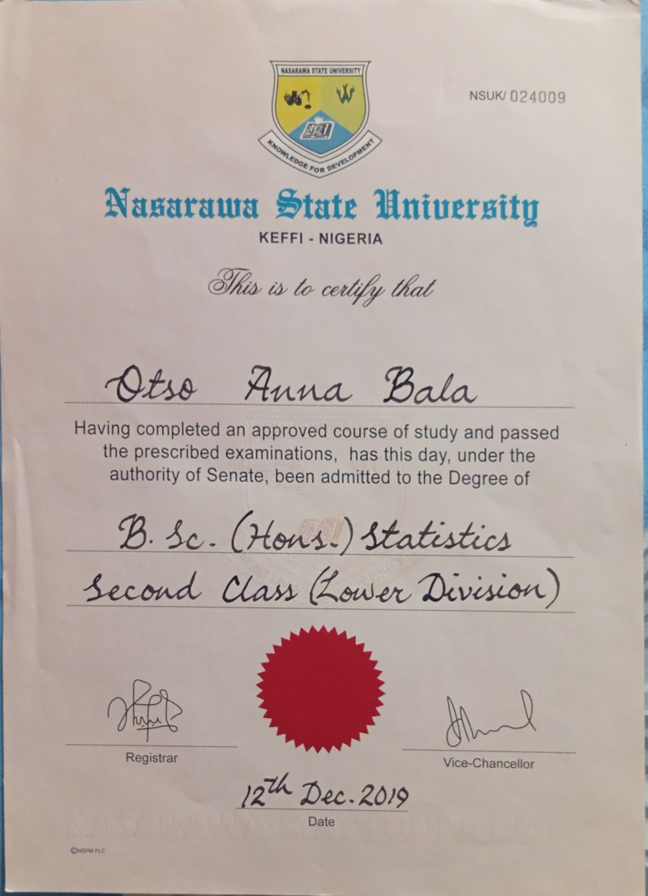

|Statistician| Survey Professional| Aspiring Data Analyst| Web Developer|
Hello, I am a conscientious and professional Statistician with hands-on experience in statistical sampling and data collection assignments. I am a graduate of Statistics from Nasarawa State University, Keffi, and I am currently pursuing a Master’s degree (M.Sc. Statistics) at the same institution. And building practical data analysis skills using Microsoft Excel, SQL, Power BI and Python
In addition to my statistical background, I am actively developing skills in web technologies, particularly HTML and CSS, which I use to build and design simple, responsive web pages. I am passionate about combining data analysis and web development to present information clearly, accurately, and professionally.
Data Collection
Nigeria Retail Sales Analysis|Excel, SQL, Python and Power BI
Data collection on National Food Consumption and Micro-Nutrient Survey
Data collection on water sanitation and hygiene (WASH)
